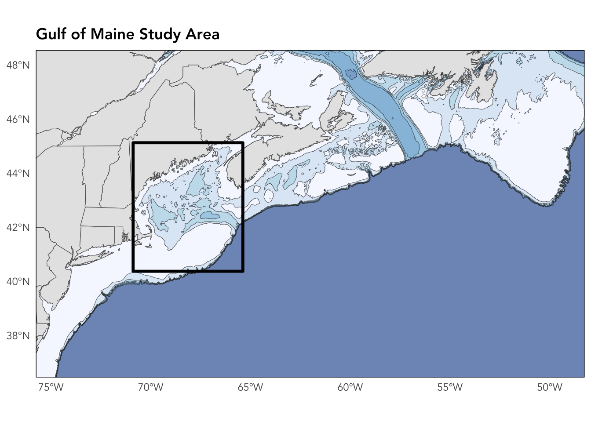

Gulf of Maine Warming Closeread
Gulf of Maine Warming with Closeread
I’ve been working on visualizations around this topic for a number of years, but I wanted to try something different to walk through my developing understanding of regional dynamics.
This document uses the quarto closeread extension.
Closereadis a custom Quarto extension which can be used to create a storyscrolling experience for html documents.
This is my first attempt at making one. This exercise has two/three goals:
- A show-and-tell of a new tool
- An attempt to evaluate whether this is worth the time investment
- Show some Ocean current or Lobster-ECOL regime results on a map
Gulf of Maine Warming Dynamics
Is it worth it?
Maybe if…
- There is a defined story you want to tell
- You are interested in html/css formatting for tweaking the style/layout
- You are looking to learn more quarto javascript functionality